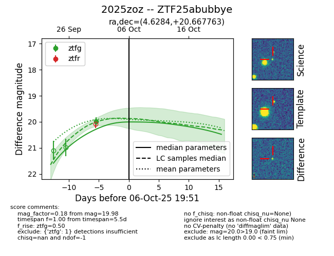
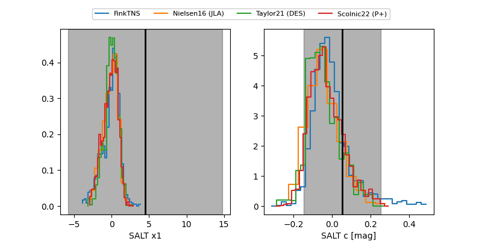

FINK: ZTF25abubbye
Lasair: ZTF25abubbye
ALeRCE: ZTF25abubbye
TNS: 2025zoz
YSE: 2025zoz
ZTF25abubbye (ztf,fink)
2025zoz (tns,yse)
equatorial (ra, dec) = (4.6284,+20.66776)
galactic (l, b) = (112.6220,-41.54394)


last ztfg=19.98
1 ztfg detections